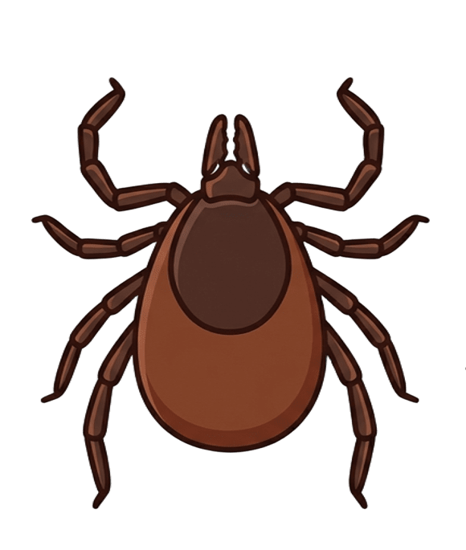

BEE & TICK CHECK

写真から「蜂・マダニ・対象外」の候補を確認し、危険度とまず取るべき行動を表示します。
⚠️ 写真判定は医療診断・昆虫の確定同定ではありません。危険な虫や巣には近づかないでください。
AI CHECK
AI接続前はデモ判定。サーバーを設定すると画像AI判定に切り替わります。
RESULT
SIGHTING MAP
QUICK GUIDES
巣や集団には近づかず、刺激しない。刺された時の応急処置や予防法。
付着が疑われる場合は無理に引き抜かない。噛まれた時の対処や受診目安。
安全な距離から、虫全体が明るく写る写真を撮る。